A. Pendahuluan
Antarmuka pengguna yang interaktif merupakan elemen krusial dalam pengembangan aplikasi seluler menggunakan Flutter. Salah satu komponen utama untuk memfasilitasi interaksi ini adalah basic form, yang berfungsi sebagai wadah untuk menerima, memvalidasi, dan mengelola masukan data dari pengguna. Penggunaan widget yang tepat, seperti TextField untuk input dasar maupun TextFormField yang terintegrasi langsung dengan logika validasi, memungkinkan pengembang untuk membangun aplikasi yang responsif dan aman dari kesalahan input.
Dalam praktikum ini, implementasi form tidak hanya sebatas menampilkan antarmuka, tetapi juga mencakup pengelolaan lifecycle memori dan status aplikasi. Hal ini dicapai melalui pemanfaatan TextEditingController untuk merakam teks, GlobalKey<FormState> untuk kontrol validasi terpusat, serta fungsi dispose() untuk mencegah kebocoran memori. Melalui pemanfaatan konsep-konsep tersebut, aplikasi dapat memproses data masukan secara efisien sekaligus memberikan umpan balik langsung kepada pengguna melalui event listener dan notifikasi sistem seperti SnackBar.
B. Tujuan
Tujuan dari praktikum ini adalah:
- Memahami konsep dan implementasi basic form untuk menerima serta mengelola input dari keyboard pengguna pada aplikasi seluler.
- Mampu memahami dan mengonfigurasi input widgets dasar seperti TextField beserta properti dekorasinya untuk membangun antarmuka yang baik.
- Menguasai penggunaan TextEditingController untuk mengambil, membaca, dan membersihkan nilai inputan pengguna secara terstruktur guna menjaga efisiensi memori.
- Mampu mengimplementasikan TextFormField yang terintegrasi dengan GlobalKey<FormState> untuk melakukan validasi form secara kolektif.
- Mengembangkan interaktivitas aplikasi dengan memberikan feedback kepada pengguna melalui eksekusi event listener dan pemunculan SnackBar.
C. Langkah-Langkah
Basic Form TextField
1. Buat file dart baru dengan nama form-textfield didalam folder lib.
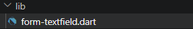
2. Buat tampilan basic form dengan menggunakan Widget TextField untuk inputan, ElevatedButton untuk memberikan event listener. Buat tampilan menggunakan kode program berikut.
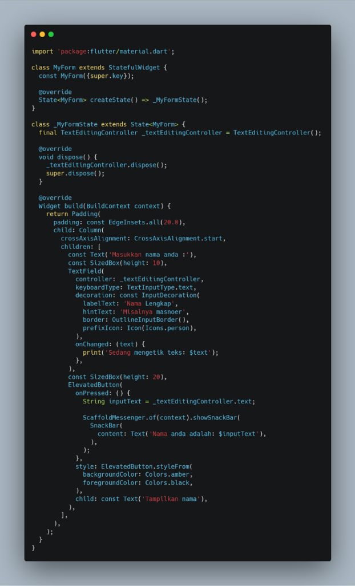
Kode ini merupakan langkah awal pembuatan basic form pada aplikasi Flutter untuk menerima input teks dari pengguna. Program dimulai dengan membuat MyApp sebagai StatelessWidget yang mengatur kerangka utama antarmuka melalui MaterialApp dan Scaffold. Di dalam body, dipanggil komponen MyForm yang merupakan StatefulWidget untuk menyusun tata letak secara vertikal menggunakan widget Column. Tata letak ini memuat teks instruksi, widget TextField yang telah diatur dengan bingkai dan ikon untuk mengisi nama, serta sebuah ElevatedButton yang nantinya akan digunakan untuk memberikan event listener saat tombol ditekan.
Output:
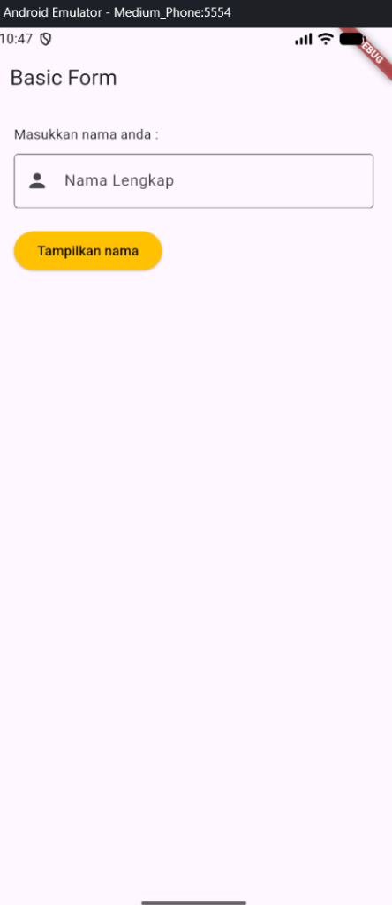
3. Pada class _MyFormState tambahkan kode program berikut.
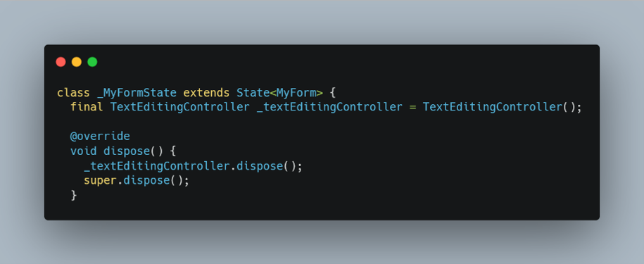
Kode ini berfungsi untuk mengelola inputan teks sekaligus menjaga efisiensi penggunaan memori di dalam kelas _MyFormState. _textEditingController digunakan sebagai pengendali yang bertugas mengambil, membaca, dan mengelola teks yang diinputkan pengguna pada widget TextField. Lalu, fungsi dispose() dipanggil untuk membersihkan dan melepas _textEditingController dari memori sistem ketika widget tersebut ditutup atau tidak lagi digunakan, sehingga aplikasi terhindar dari masalah kebocoran memori.
4. Tambahkan property berikut pada Widget TextField.
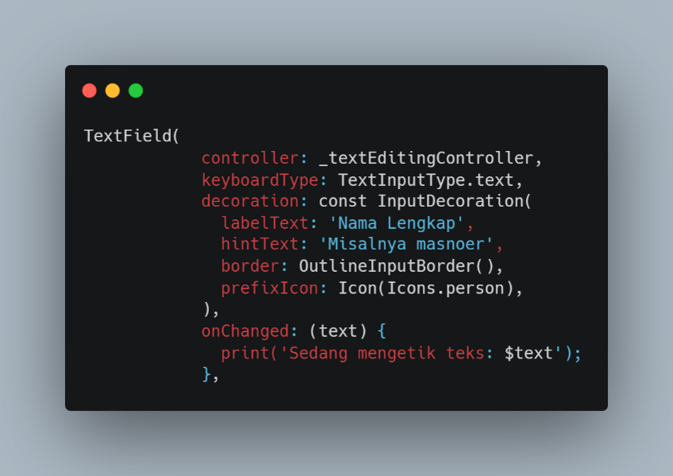
Kode ini merupakan konfigurasi widget TextField yang berfungsi untuk menerima inputan teks dari pengguna. Properti controller menghubungkan bidang input dengan _textEditingController untuk mengambil data teks, sedangkan keyboardType menentukan jenis papan ketik biasa saat kolom diklik. Bagian decoration mengatur estetika tampilan, contohnya label Nama Lengkap, teks petunjuk, garis tepi, dan ikon orang di sisi kiri. Lalu fungsi onChanged bekerja sebagai event listener yang mencetak isi inputan ke konsol secara real-time setiap karakter baru dibuat.
5. Tambahkan kode program berikut pada widget ElevatedButton.
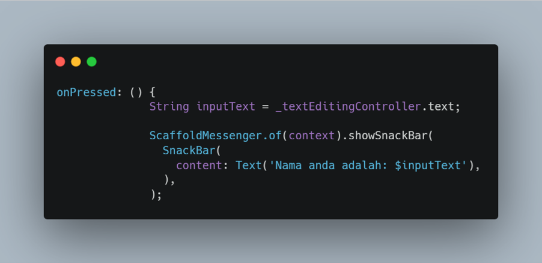
Kode ini merupakan fungsi event listener pada onPressed yang dieksekusi saat tombol ditekan. Alurnya dimulai dengan membaca nilai teks terbaru yang diinputkan pengguna melalui _textEditingController lalu menyimpannya ke dalam variabel inputText. Nilai tersebut kemudian ditampilkan di bagian bawah layar dalam bentuk notifikasi menggunakan widget SnackBar melalui perintah ScaffoldMessenger.
6. Jika sudah selesai, run dan akan muncul output seperti ini.
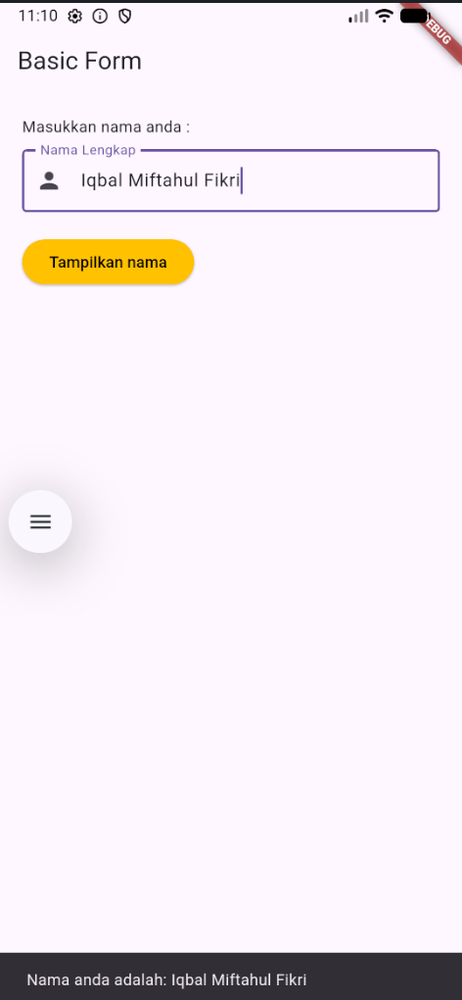
Basic Form TextFormField
7. Buat file baru didalam folder lib dengan nama form-textformfield.

8. Buat form inputan menggunakan 2 buah widget TextFormField dan 1 buah ElevatedButton, berikut kode program untuk tampilan tersebut.
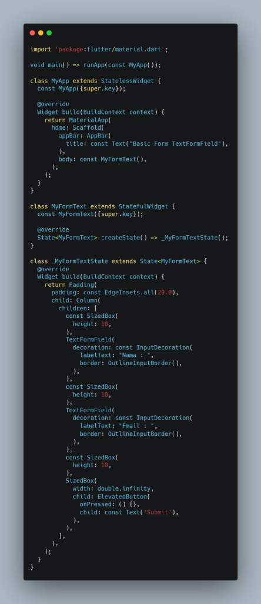
Kode ini merupakan langkah awal pembuatan basic form pada aplikasi Flutter untuk menerima input teks dari pengguna. Program dimulai dengan membuat MyApp sebagai StatelessWidget yang mengatur kerangka utama antarmuka melalui MaterialApp dan Scaffold. Di dalam body, dipanggil komponen MyForm yang merupakan StatefulWidget untuk menyusun tata letak secara vertikal menggunakan widget Column. Tata letak ini memuat teks instruksi, widget TextField yang telah diatur dengan bingkai dan ikon untuk mengisi nama, serta sebuah ElevatedButton yang nantinya akan digunakan untuk memberikan event listener saat tombol ditekan.
Output:
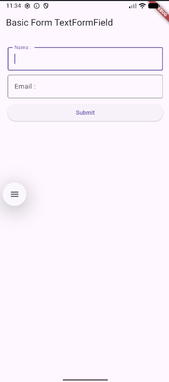
9. Tambahkan pada class _MyFormTextState kode berikut:
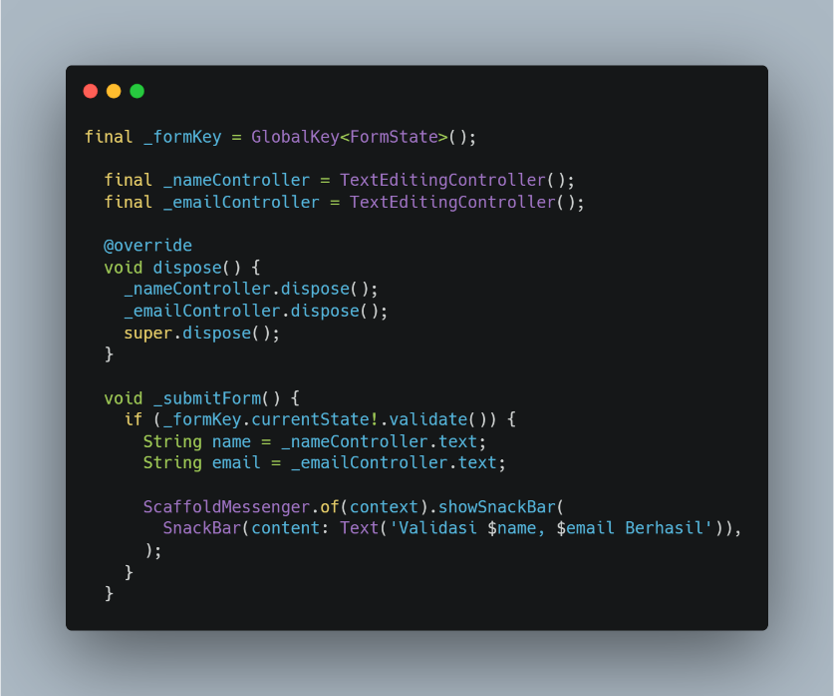
Kode ini berfungsi untuk mengelola logika validasi, pengambilan data input, serta pembersihan memori pada form. formKey bertindak sebagai identitas untuk mengontrol status validasi form, sedangkan _nameController dan _emailController berfungsi untuk mengambil teks yang diketikkan pengguna pada kolom nama dan email. Metode dispose() dijalankan untuk melepaskan kedua controller dari memori saat halaman ditutup agar terhindar dari kebocoran memori. Lalu, fungsi _submitForm() akan mengeksekusi pemeriksaan validasi melalui _formKey, jika valid maka data nama dan email akan ditampilkan dalam bentuk notifikasi pesan menggunakan widget SnackBar.
10. Pada widget tampilan bungkus menggunakan widget Form dan tambahkan key: _formKey.
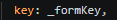
11. Ubah kode program pada TextFormField menjadi seperti kode program berikut ini.
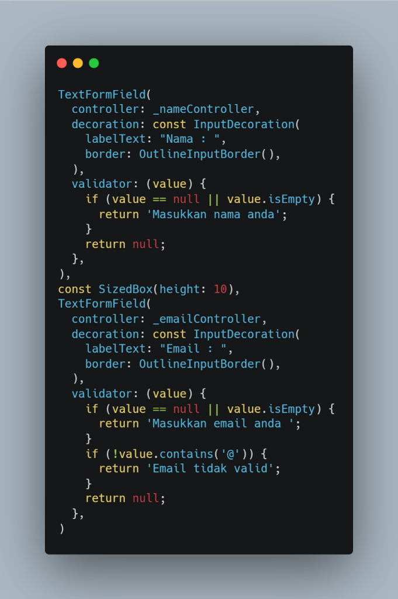
Kode ini menambahkan logika validasi pada masing-masing widget TextFormField menggunakan fungsi validator. Pada input nama, sistem memeriksa apakah kolom dalam kondisi kosong dan akan menampilkan pesan error jika pengguna belum mengisinya. Pada input email, selain mengecek terhadap teks kosong, logika ini juga menggunakan metode contains("@") sebagai syarat validasi format email. Jika kriteria tidak terpenuhi, pesan peringatan akan otomatis ditampilkan tepat di bawah bidang input.
12. Selanjutnya tambahkan method _submitForm pada method onPressed di ElevatedButton seperti kode program berikut.
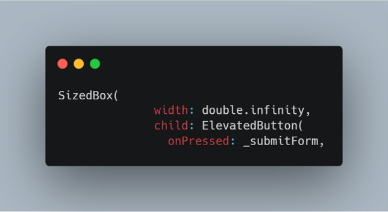
Kode ini menghubungkan tombol Submit dengan fungsi _submitForm melalui properti onPressed. Ketika tombol ditekan, Flutter akan memicu event listener yang menjalankan proses validasi pada setiap bidang input yang ada di dalam Form. Pembungkusan ElevatedButton menggunakan SizedBox(width: double.infinity) agar tombol merenggang secara horizontal dan memenuhi seluruh area form.
13. Jika sudah, maka akan tampil output seperti ini.
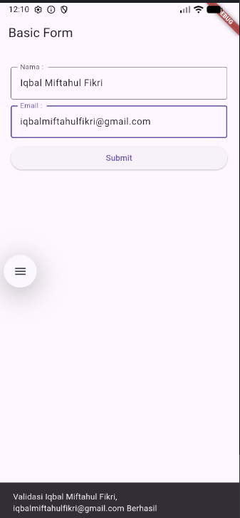
Latihan / Tugas — Kalkulator Kabataku
14. Menyiapkan Project Flutter.
Pertama-tama klik CTRL + Shift + P, setelah itu klik bagian Create New Project, lalu Application untuk membuat project baru.
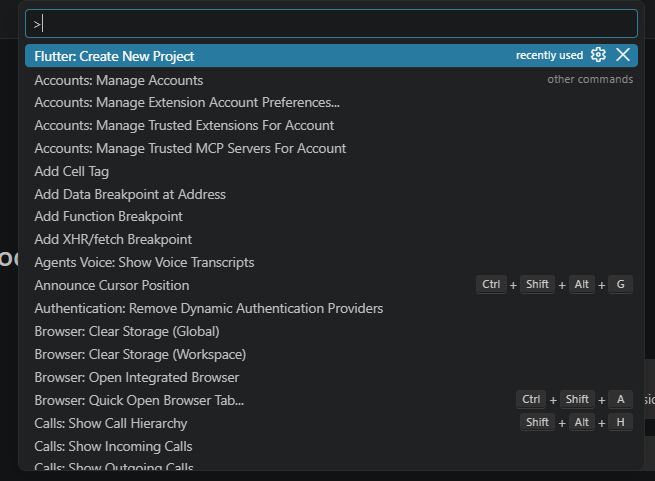
15. Membangun Kerangka Aplikasi.
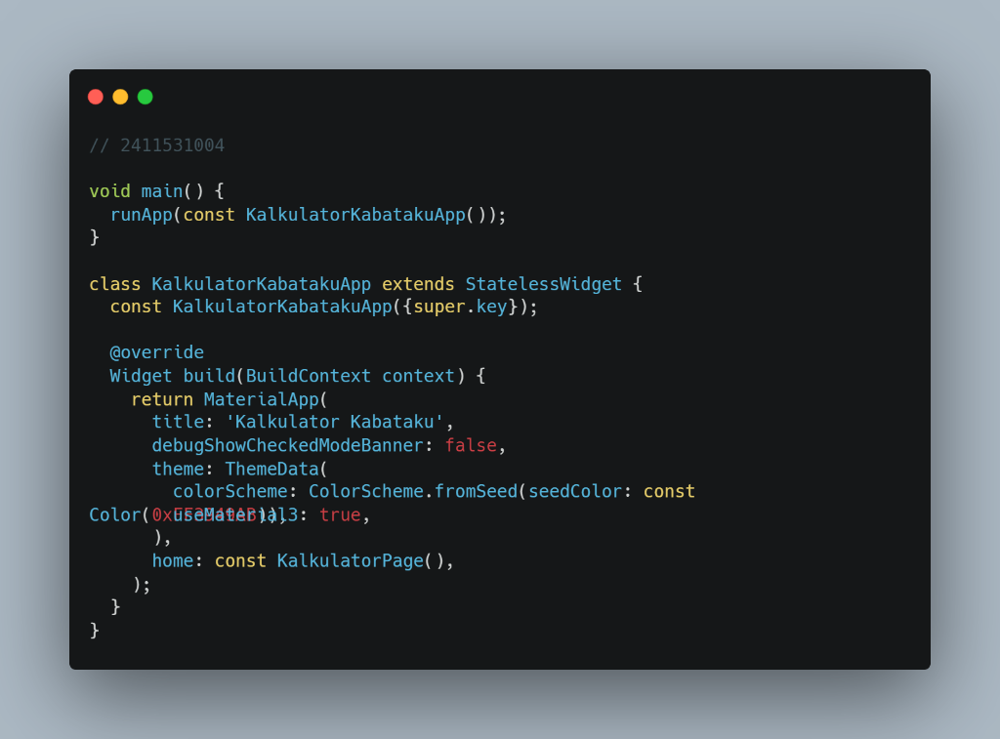
Setelah project siap, buat kerangka aplikasi berupa class KalkulatorKabatakuApp yang menjalankan MaterialApp. Di sini ditentukan juga tema aplikasi, yaitu Material 3 dengan warna utama indigo, serta halaman yang ditampilkan saat aplikasi dibuka.
16. Menyiapkan State Halaman Utama.
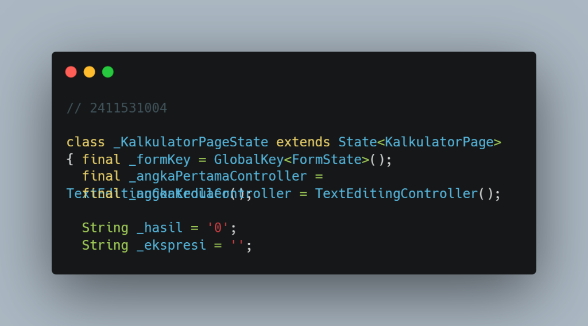
Sebelum menyusun tampilan, halaman utama dibuat sebagai StatefulWidget. Hal ini perlu karena aplikasi harus mengingat isi kedua inputan dan hasil perhitungan, lalu menampilkannya kembali setiap tombol ditekan. Di dalam state disiapkan TextEditingController untuk membaca isi input, GlobalKey untuk validasi form, serta variabel _hasil dan _ekspresi yang nantinya ditampilkan.
17. Membuat Dua Widget Inputan.
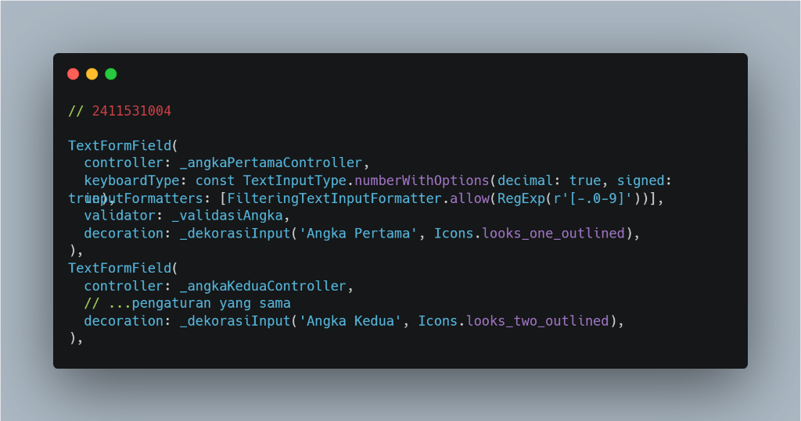
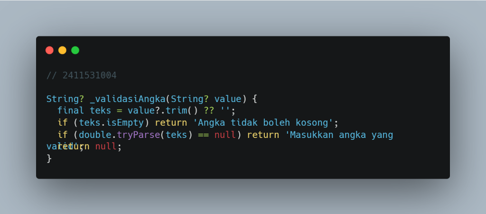
Buat dua buah TextFormField untuk menerima angka dari pengguna. Kedua inputan ini sudah dilengkapi keyboard khusus angka, pembatas karakter agar hanya angka (termasuk titik desimal) yang bisa diketik, serta validator yang memastikan input tidak kosong dan benar-benar berupa angka.
18. Menyusun Logika Operasi Kabataku.
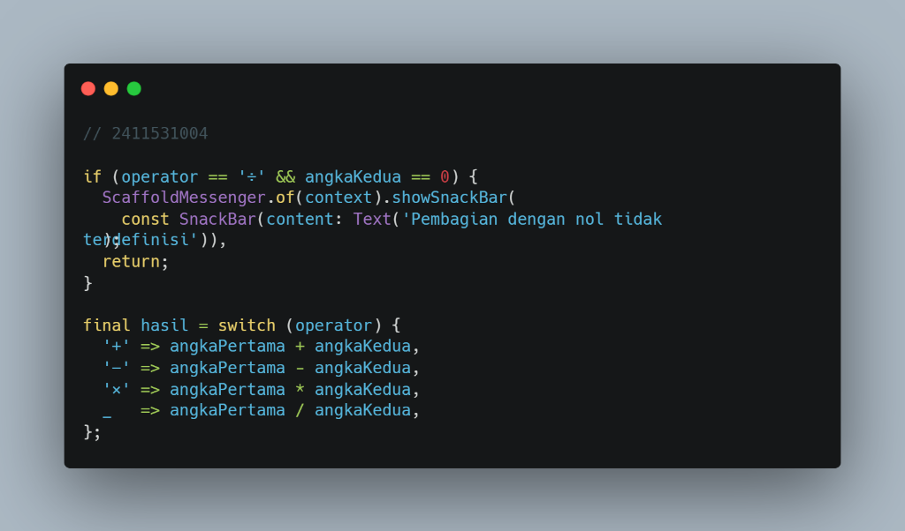
Dengan input yang sudah rapi, selanjutnya dibuat method _hitung() yang menjadi otak kalkulator. Method ini memvalidasi form terlebih dahulu, mengubah teks menjadi angka dengan double.parse, lalu memilih operasi sesuai simbol yang dikirim tombol menggunakan switch.
19. Menambahkan ElevatedButton Sebagai Eksekutor.
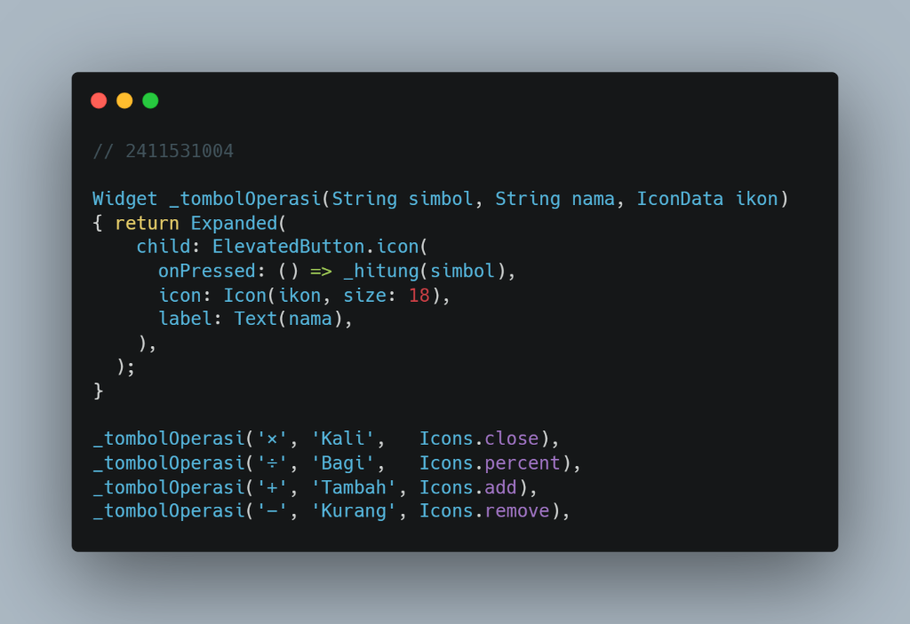
Buat method _tombolOperasi() yang membungkus ElevatedButton.icon. Tombol ini, saat ditekan, langsung memanggil _hitung() dengan simbol operasi masing-masing. Method ini dipanggil empat kali sehingga terbentuk empat tombol, yaitu Kali, Bagi, Tambah, dan Kurang.
20. Menampilkan Hasil Dengan Widget Text.
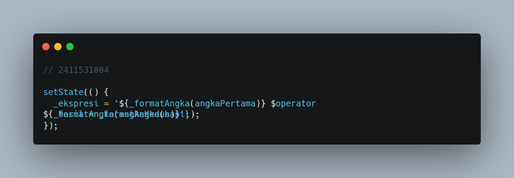
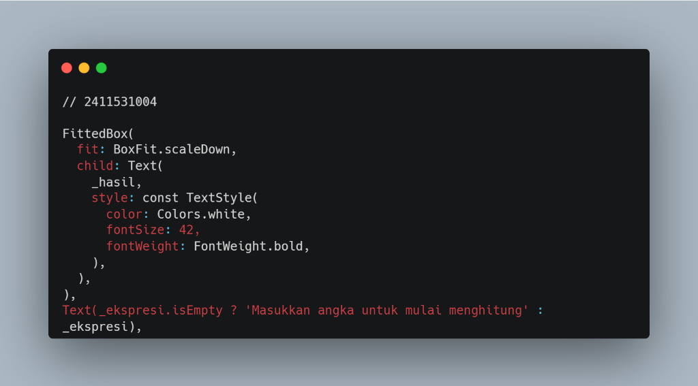
Pada tahap ini hasilnya ditampilkan. Setelah perhitungan selesai, setState() memperbarui isi _hasil dan _ekspresi, lalu keduanya dirender oleh widget Text di dalam panel berwarna, angka hasil ditampilkan besar dan tebal, sedangkan ekspresi seperti A + B nya ditampilkan kecil di bawahnya.
21. Jika sudah selesai maka akan tampil output seperti ini.
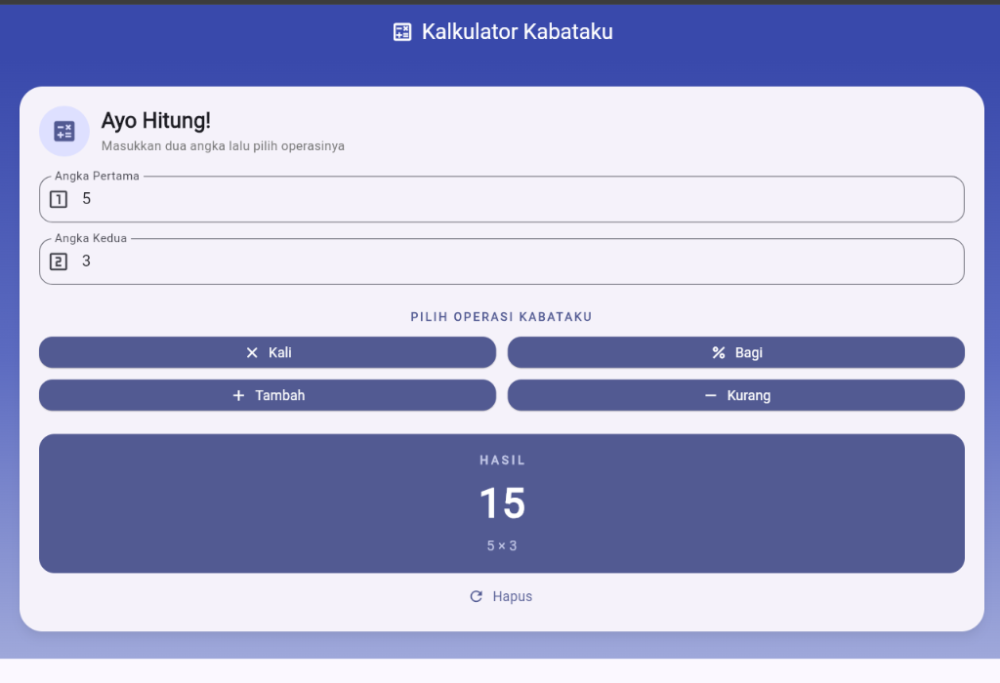
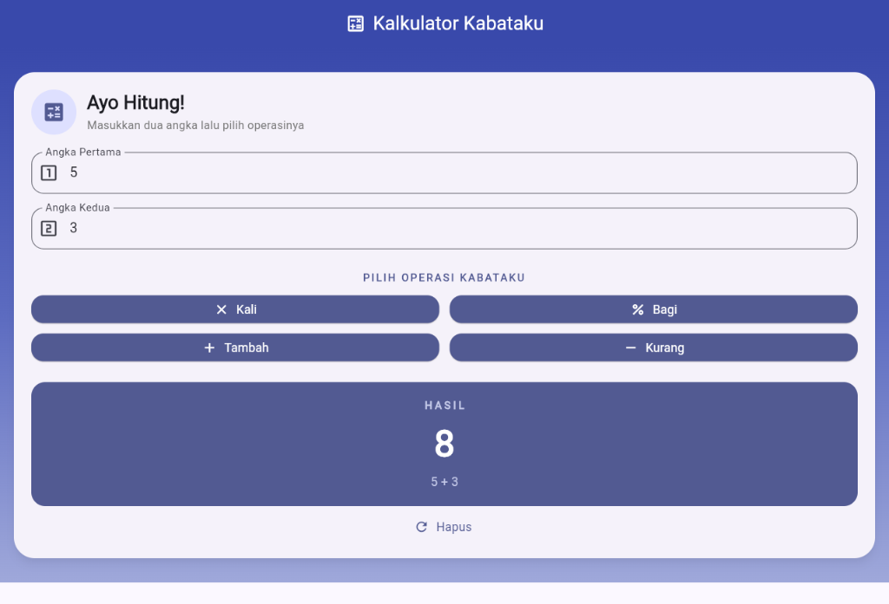
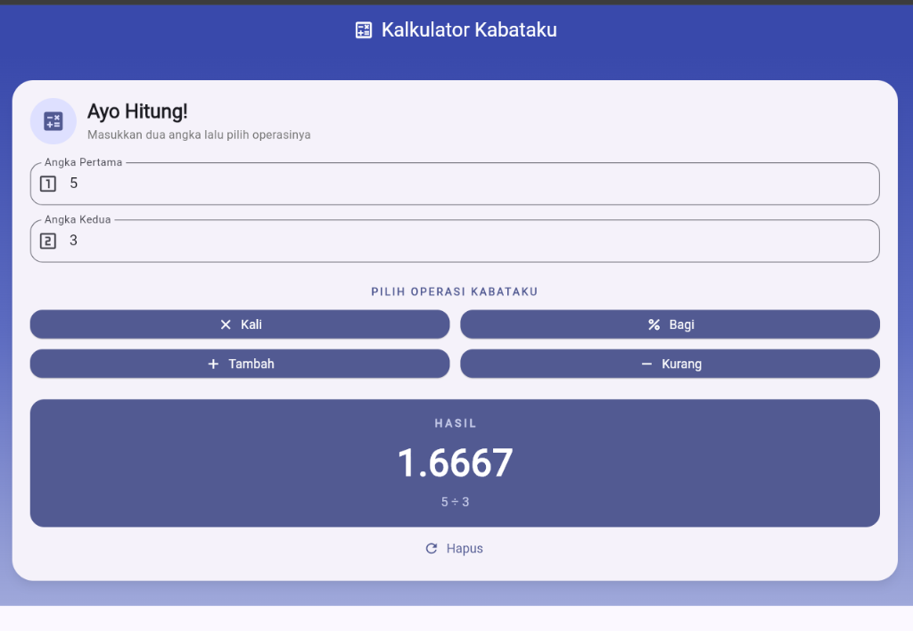
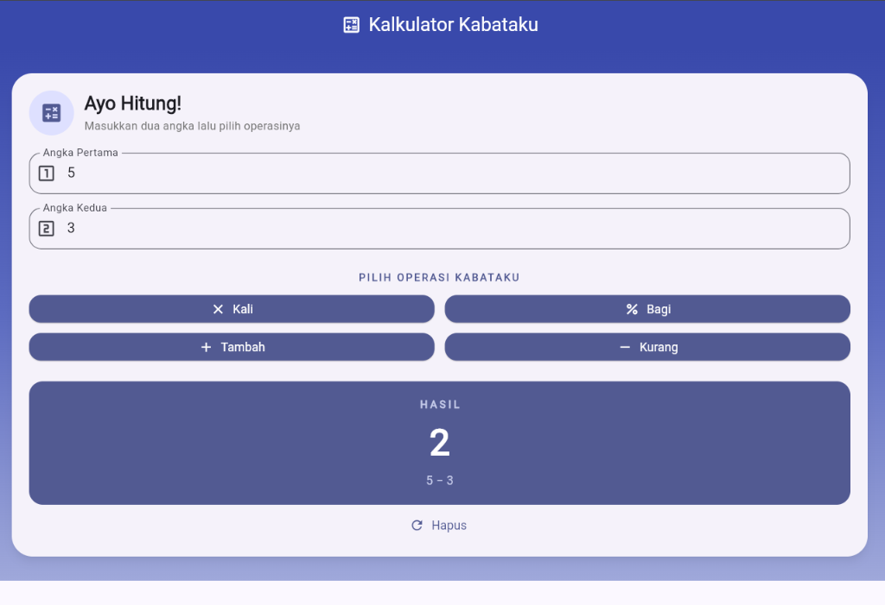
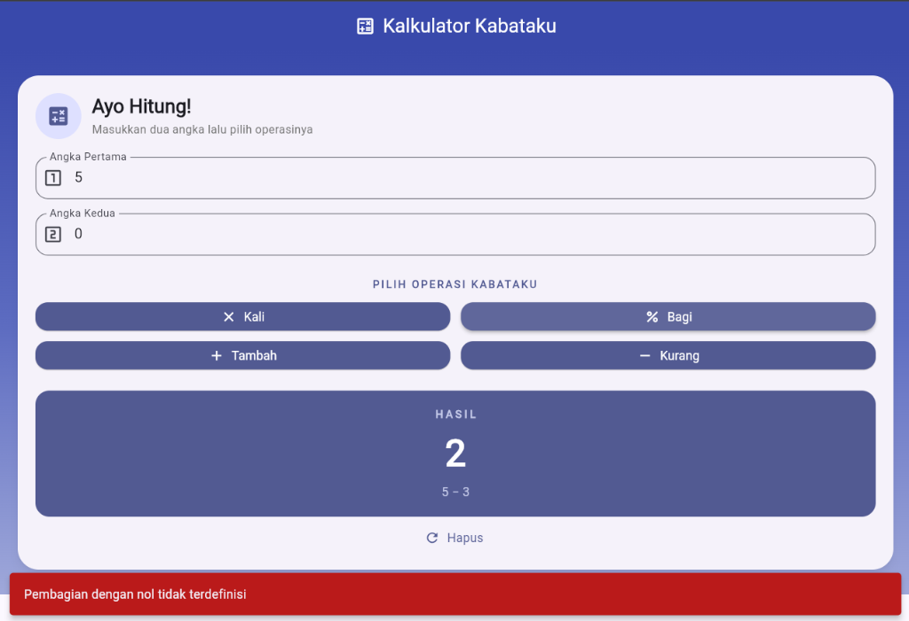
D. Kesimpulan
Berdasarkan praktikum yang telah dilaksanakan, dapat disimpulkan bahwa Flutter menyediakan pendekatan yang sangat terstruktur dalam menangani input pengguna melalui pemisahan kapabilitas antara TextField dan TextFormField. TextField berfungsi untuk kebutuhan input teks yang berdiri sendiri, sedangkan TextFormField memberikan keunggulan signifikan untuk formulir karena terintegrasi dengan properti validator bawaan. Penggunaan GlobalKey<FormState> sangat memudahkan pengelolaan formulir karena memungkinkan sistem memvalidasi seluruh bidang input secara serentak hanya dengan satu pemicu dari tombol aksi.
Selain penyusunan antarmuka, aspek manajemen memori dan stabilitas sistem menjadi catatan dari praktikum ini. Penggunaan TextEditingController wajib didampingi dengan pemanggilan metode dispose() guna melepaskan memori saat widget tidak lagi digunakan, sehingga aplikasi terhindar dari memory leak. Secara keseluruhan, kolaborasi yang baik antara widget input, pengontrol status, dan metode interaktif seperti SnackBar menghasilkan komponen formulir yang dinamis, efisien, dan ramah pengguna.
Lihat Repository GitHub